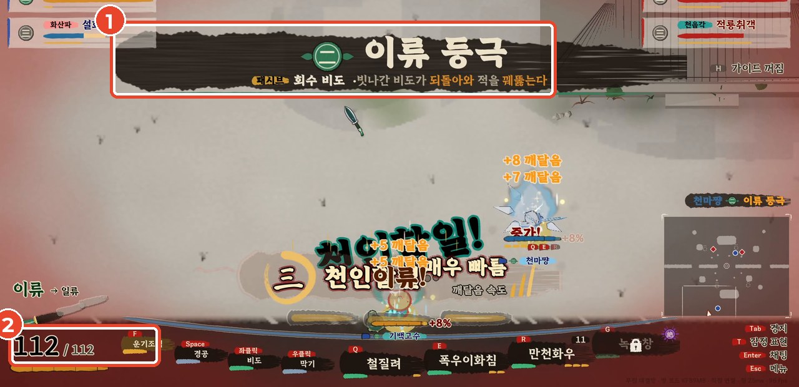

1 · 메인 프로젝트 · 1인 개발
정무대전 正武大战
여섯 문파 무인이 무작위 맵에서 겨루는 최대 6인 온라인 무협 대전 액션.
내가 만든 것
- 전투여섯 문파 기술, 막기 · 튕겨내기, 상태 이상
- 멀티방 만들기부터 결과창 · 랭크 대전까지
- 성장판 안에서 경지가 오르고 기술이 열리는 구조
- 도구자동 대전, 지연 시뮬, 판정 일치율 측정
AI와 나눈 일
1.1플레이 영상
1.2구조 한 장
판의 흐름과 체력은 방장이, 맞았는지는 맞는 쪽이, 투사체 출발점은 쏘는 쪽이 정한다. 맞는 쪽이 보낸 피해는 방장이 한 번 더 걸러서 반영한다. 네트워크를 타는 클래스는 협객(Duelist)과 판(DuelGame) 둘뿐이고, 나머지 약 210개는 화면만 맡는다.
1.3핵심 시스템
되감기 판정
맞는 쪽 PC가 판정하고, 공격자 화면에 보이던 위치로 되돌려서 잰다. 막기 · 튕겨내기는 지금 기준이라 맞는 쪽 입력이 무시되지 않는다.
판 안 경지 성장
때리고, 막고, 튕겨내면 깨달음이 쌓이고, 경지를 돌파하면 문파마다 다른 기술이 하나씩 열린다. 돌파 중에 맞으면 주화입마에 빠진다.

측정 도구
봇끼리 50~150판을 4배속으로 돌려 문파별 승률을 모으고, 지연을 일부러 걸어 두 화면의 판정 일치율을 잰다. AI가 짠 코드를 눈으로만 보고 넘기지 않으려고 만들었다.
그 밖에대기실 · 결과창 · 랭크 대전 / 입문 수련 8단계와 가이드 / 무공 도감(영상 68개) / 무작위 지형 5종
1.4기술 사례
게스트 화면에서만 빗나가는 비도 일치율 15% → 91%
- 문제
- 게스트 화면에서 맞은 비도가 실제로는 맞지 않았다.
- 원인
- 맞는 쪽이 지연 보상 없이 지금 위치로 판정했고, 던진 사람 화면만 비도 출발점이 달랐다.
- 해결
- 공격자가 보던 시점으로 위치를 되감아 판정하고, 출발점과 방향은 쏘는 사람이 보낸다.
- 그 뒤
- AI로 넣은 새 기술이 이 원칙을 깨서 76%로 떨어졌고, 같은 측정으로 찾아 89%로 되돌렸다.
측정 조건: 같은 PC에서 개발 빌드 두 개, 편도 지연 60±10ms, 봇끼리 자동 대전. 실제 인터넷 환경 전체를 대표하는 값은 아니다.
과정 펼치기 측정을 빌드로 옮긴 이유 · 선택지 · 한계 · 코드
재 보니 게스트 화면에서 닿은 비도 가운데 실제로 맞은 것은 15%였다. 판정을 공격자 쪽으로 옮기면 막기 · 튕겨내기처럼 맞는 쪽이 누른 입력이 무시된다. 그래서 판정은 맞는 쪽에 두고, 12ms마다 기록해 둔 내 위치를 공격자 화면에 보이던 시점으로 되돌려서 쟀다.
Duelist.cs · ViewDelayOf / HitPositionfloat ViewDelayOf(Duelist attacker) { if (attacker == null || attacker.IsOwner || !nm.IsListening) return 0f; bool attackerIsHost = attacker.OwnerClientId == NetworkManager.ServerClientId; float attackerOneWay = attackerIsHost ? 0f : nm.IsServer ? transport.GetCurrentRtt(attacker.OwnerClientId) / 2000f : OneWay; // 방장 몸: 게스트 PC 보간 버퍼(50ms + 3틱)만큼 더 늦게 그려진다 // 게스트 몸: 이미 늦은 시각이 찍혀 와서 도착하는 대로 그려진다 float delay = IsServer ? attackerOneWay + 0.05f + 3f / 60f : OneWay + attackerOneWay + (attackerIsHost ? 0.02f : 0.01f); return Mathf.Min(MaxRewind, delay); // 상한 0.25초 } public Vector3 HitPosition(Duelist attacker) => PositionAgo(ViewDelayOf(attacker));
Duelist.cs · UseRemoteInterpolationif (IsServer) { NetworkTransform.InterpolationBufferTickOffset = 0; return; } var nt = GetComponent<NetworkTransform>(); nt.PositionInterpolationType = nt.RotationInterpolationType = InterpolationTypes.LegacyLerp; nt.PositionLerpSmoothing = nt.RotationLerpSmoothing = false; NetworkTransform.InterpolationBufferTickOffset = 1; // 3틱 전을 그린다
되감기를 넣은 뒤에도 에디터에서는 일치율이 잴 때마다 38~60%로 달랐다. 창 두 개를 띄우면 포커스 없는 에디터가 49초에 3프레임만 돌았고, 프로파일러로 보니 화면 출력 대기가 1초마다 500ms씩 걸리고 있었다. 에디터에서만 생기는 멈춤이라 측정을 개발 빌드 두 개로 옮겼다.
숫자가 안정되자 남은 원인이 보였다. 던지는 사람 화면에서만 비도가 지금 자리에서 출발해 궤적이 최대 0.8m 갈라졌다. 출발점과 걸음 속도를 RPC 하나로 보내고 모든 화면이 같은 식으로 자리를 셈하게 하자, 비도 102번 중 93번이 일치했다.
선택지
- 공격자 화면 기준 판정 → 막는 사람 반응이 무시된다
- 에디터에서 멈춘 구간만 빼고 분석 → 매번 손으로 골라야 한다
- 맞는 쪽 판정 + 되감기, 측정은 개발 빌드 두 개
한계
0.25초보다 늦은 연결은 보정하지 않는다. "화면에서 닿음 → 실제로 맞음"만 세고, 실제 공유기 환경이나 사람끼리 한 판은 아직 재지 못했다.
다른 PC에서만 작아지는 커서 32px → 64px
- 문제
- 다른 PC에서 커서가 작았고, 설정에서 키워도 그대로였다.
- 원인
- 윈도우에서 유니티 SetCursor는 그림 크기와 상관없이 32px로 줄인다.
- 해결
- Win32로 커서를 직접 만들고, 유니티가 되돌리지 못하게 SetCursor 호출을 가로챘다.
윈도우 빌드, 1080p 모니터 기준. 설정 50 / 100 / 200%에서 32 / 64 / 128px, 기본 화살표 깜빡임 0번.
과정 펼치기 잘못 짚은 원인 · 선택지 · 한계 · 코드
내 PC에서는 괜찮아 보여서 늦게 알았다. 처음엔 64px로 고정된 거라고 보고 크기별 이미지를 11벌 만들었는데, 잘못 짚은 원인이었다. 유니티의 SetCursor가 윈도우에서는 그림 크기와 상관없이 32px로 줄이고 있었다.
Win32의 CreateIconIndirect로 커서를 직접 만들어 창에 걸었더니, 유니티가 매 프레임 기본 화살표를 다시 걸어서 커서가 깜빡였다. 그래서 WndProc과 UnityPlayer.dll의 SetCursor 호출(가져오기 표, IAT)까지 가로채고, 게임을 끌 때 되돌리게 했다.
DuelCursor.cs · PatchUnitySetCursor (요약)var module = GetModuleHandle("UnityPlayer.dll"); int imports = Marshal.ReadInt32(module, pe + 24 + 120); // 가져오기 표 // USER32.dll 항목에서 이름이 "SetCursor"인 칸을 찾는다 iatSlot = module + slots + i * 8; realSetCursor = Marshal.ReadIntPtr(iatSlot); WriteSlot(Marshal.GetFunctionPointerForDelegate(unitySetCursor)); // 유니티가 SetCursor를 불러도 창 안이면 우리 커서로 static IntPtr UnitySetCursor(IntPtr c) => SetCursor(Inside() ? current : c);
선택지
- "64px 고정"이라 보고 크기별 이미지 11벌 → 잘못 짚은 원인
- 소프트웨어 커서 → 녹화에 찍히고 한 프레임 늦다
- Win32로 직접 만들어 창에 건다
한계
윈도우 64비트에서만 동작한다. 엔진 버전이 바뀌면 다시 확인해야 한다.
1.5결과 · 회고
- 동기 약 20명이 테스트했고, 2~3일마다 새 빌드를 냈다.
- 다음에는 측정 방법부터 의심한다.
- 실제 인터넷 환경과 사람끼리 한 판은 아직 재지 못했다.